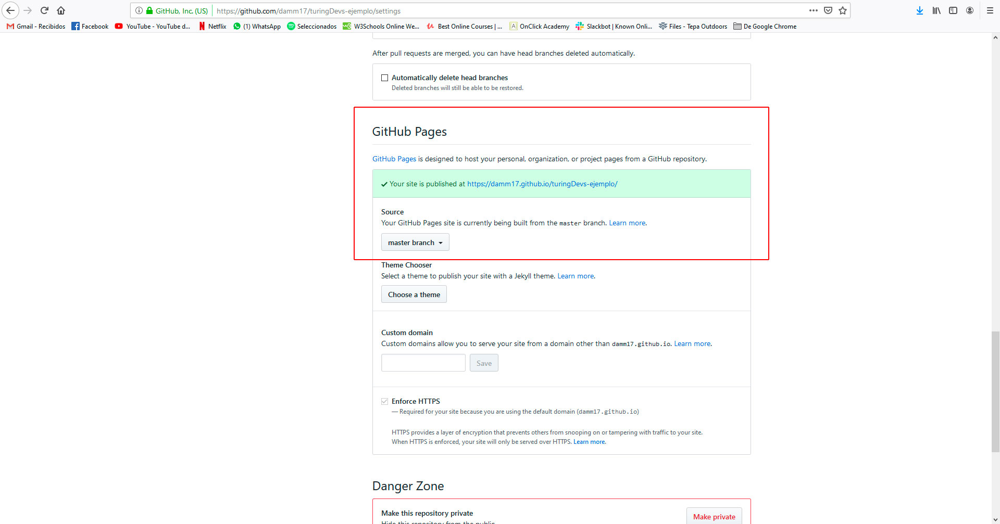

Guía para aprender a usar Git / Github
Hola a todos! Sé que en internet hay miles de guías sobre como hacer esto (y probablemente mejores), pero también sé que muchos son nuevos en esta área, o no tienen tiempo de buscar y probar si funciona lo que vieron, etc. Así que acá les dejo un paso a paso, completamente desde 0 y la metodología que suelo utilizar yo en el día a día (en casos poco complejos). Ojalá les sirva y cualquier cosa me preguntan por Discord.
Resumen de cada paso:
- 1. GIT: Instalación de Git y apertura de la consola de comandos (GitBash)
- 2. GITHUB: Creación de la cuenta y de nuestro repositorio.
- 3. GITBASH: Metodología de trabajo con Git. Comandos más comunes y subida de archivos al repositorio.
1. Instalar GIT (https://git-scm.com/downloads)
La instalación en sí no tiene mucha ciencia. Si están en Windows simplemente le dan todo a 'Siguiente' y chau. La única opción que puede llegar a valer la pena, es una de las primeras que les pregunta cuál quieren que sea el editor de texto que van a usar con git (por defecto viene Nano). En lo que a esta guía respecta, no van a hacer uso del editor de git en ningún momento, pero dejo la aclaración por las dudas.
2. Abrir la consola (Git Bash)
El segundo y último paso por el momento, es simplemente que dejen abierta la consola para ya tenerla a mano. Si instalaron por primera vez, antes de terminar les da la opción ya de abrirla. Si ya lo tenían instalado, abren el menú de windows -> y escriben 'git' para que les aparezcan los resultados. Si no lo ven en el listado, es porque no lo instalaron o hubo algún problema con la instalación.
Usuarios de MAC: Abren la consola normal, la que ya viene por defecto y listo. Para chequear si tienen git instalado, usen el comando git --version

1. Registrarse/Logearse en Github (https://github.com/)
Nada para explicar acá. Se hacen la cuenta y listo.
2. Crear un nuevo repositorio
Una vez que estén logeados en su cuenta, deberían ver algo como en la siguiente imagen. Simplemente apretan el botón verde que dice "New"

En la pantalla de creación las dos opciones que nos interesan por el momento son:
Nombre del repositorio: creo que esto es obvio y no necesita explicación.
Initialize this repository with a README: Esta es menos obvia, pero es importante porque nos sirve para la etapa siguiente en la que vamos a clonar el repositorio.

Finalmente, si el repositorio se creó correctamente, vamos a ver una pantalla como la siguiente. Por el momento, lo único que nos interesa de acá es el botón verde que dice "Clone or download". Hacemos click ahí y copiamos la URL que nos aparece, para usarla en breve en la consola de comandos.
{kind=link}
Aclaración: De acá en adelante va a estar todo orientado a Windows, en cuanto a rutas y ese tipo de cosas. No debería ser muy distinto en MAC pero puede que haya alguna diferencia. De cualquier forma, los comandos de git son todos los mismos.
2. Moverse con la consola hacia el Escritorio (o la carpeta que quieran)
Por defecto cuando abran GitBash, los va a dejar parados en la carpeta del usuario que actualmente está usando la máquina. Debería ser algo como C:\Usuarios\@nombre_del_usuario
Si no están seguros dónde están parados, ni cuál es el contenido de archivos en esa carpeta inicial, utilicen el comando ls -a para listar todos los archivos/carpetas en el directorio en el que se encuentran actualmente.
{kind=link}
Nosotros nos vamos a mover hacia el Escritorio. Para eso usamos el comando cd @nombre_de_la_carpeta. En este caso puntual: cd Desktop
Para volver un nivel hacia atrás, usan lo siguiente: cd ../
{kind=link}
3. Clonar el repositorio
Una vez parados en la carpeta correspondiente vamos a clonar nuestro repositorio. Recuerden tener copiada la URL del mismo, sino copienla ahora.
El comando en consola para hacer esto es: git clone @url
ctrl + v no les va a funcionar para pegar la URL, así que usen shift + ins o directamente click derecho -> pegar/paste
Si el clonado es exitoso, van a ver algo como lo siguiente. Luego volvemos a hacer un cd para entrar en la carpeta que acabamos de clonar.

4. Trabajar en nuestro repositorio
Ok, ya tenemos el repositorio clonado y entramos a su carpeta. ¿Ahora qué? Bien, esta sería la etapa en la que uno empieza a trabajar en su proyecto. Entonces por ejemplo, crea su archivo .html y arma una estructura, luego crea su carpeta de css y agrega una hoja de estilos para que no sea un asco lo que se ve y así sucesivamente.
Nosotros vamos a asumir que ya terminamos de trabajar con nuestros archivos, así que al final nos queda algo como esto:
{kind=link}
Como verán, agregamos algunas carpetas y archivos a nuestro repositorio. Pero hay una carpeta particular que está desde el principio y que por defecto viene oculta: la carpeta .git
Tengan cuidado con esa porque es la que se ocupa de hacer funcionar el repositorio (hablando mal y pronto), así que no la borren, no la muevan, no le cambien nada, porque después les van a salir errores por todos lados o directamente van a romper el repositorio y pueden llegar a perder muchas horas de trabajo.
Dejando eso de lado, una vez que terminamos de trabajar lo más común es chequear el estado de los archivos en nuestro repositorio. Para eso usamos git status
En este caso lo que nos está diciendo es que los archivos nuevos que acabamos de agregar al proyecto, no están siendo monitoreados por git. Y un poco la gracia de usar esta herramienta es esa, que haya un seguimiento de los cambios que vamos haciendo para tener registro de versiones y demás.
5. Seguimiento de archivos
Por ende, el paso siguiente es agregar estos archivos al monitoreo, o lo que se conoce como "Staging Area". Para eso usamos el comando git add -A o git add --all
{kind=link}
Ahora cuando vuelvo a ejecutar un git status ya no me aparecen en rojo los archivos, sino en verde, y si se fijan la propia consola me da dos directivas: Por un lado me dice, 'che mirá, tenés todos estos archivos que tienen cambios y los podés guardar (hacer un commit)' y por otro me avisa: 'Si te equivocaste y no querías monitorear todos estos archivos podés hacer un reset'. En resumen, un git reset así por default, saca los archivos del Staging Area y los vuelve a dejar sin monitoreo.
Como consejo, por ahora no le den mucha bola a lo del git reset. En la mayoría de los casos uno quiere agregar todo para hacerle el seguimiento y luego ir haciendo los commits a medida que avanza con su trabajo para versionarlo.
6. Hacer el primer commit
Bueno, ya tenemos nuestros archivos en seguimiento, github nos dice que está todo ok para guardar, yo ya sé que avancé lo suficiente con mi trabajo como para tener un primer registro de todo lo que hice hasta ahora, así que vamos a hacer el primer commit.
Para eso vamos a ejecutar el comando git commit -m "@mensaje_del_commit"
Para tener en cuenta: El mensaje del commit es obligatorio y la idea es que sea lo más descriptivo posible, pero sin escribir todo un parráfo tampoco. Esto nos sirve a nosotros para tener un resumen de las cosas que se guardaron a este punto en nuestro proyecto y sobretodo también le sirve a los demás que visiten nuestro repositorio y puedan tener una idea de qué cambios se estuvieron haciendo en el mismo.
Luego de hacer el commit, si volvemos a ejecutar un git status vamos a ver que ya no tenemos cambios pendientes.
{kind=link}
7. Publicar nuestros cambios
Ya hicimos el commit, tenemos todo guardado y no vamos a hacer más cambios por el día de hoy ¿cómo publico todos esos cambios que hice en mi computadora? Bien, para esto git nos ofrece el siguiente comando git push que en resumen lo que va a hacer es subir a nuestro repositorio online, todos los commits que nosotros tengamos en nuestro repositorio local. Pero git no es boludo y primero se va a fijar que la versión online sea la misma que tu versión local (previa a tus cambios). Es decir, se va a fijar que en tu repositorio online siga habiendo exactamente lo mismo que cuando hiciste el git clone y si no fuera así, te va a tirar un alerta.
Por eso, una buena práctica es ejecutar otro comando antes del git push y es uno muy parecido que se escribe git pull. Con el pull lo que vamos a hacer es revisar si el repositorio online tuvo algún cambio (en el interin entre que lo cloné y trabajé con mis archivos), y si lo hubiera me los va a descargar y a actualizar.
En este ejemplo, nosotros sabemos que estamos trabajando solos y que nadie subió nada a nuestro repositorio online. De todas formas vamos a probar de hacer un pull primero y luego un push.
{kind=link}
Cabe destacar, que a los comandos de pull y push se les agregaron dos parámetros origin master. Por el momento, vamos a usarlo siempre de esta forma pero para que tengan en cuenta los más curiosos.
'Origin' hace referencia al repositorio de origen al que nos conectamos. En general uno siempre tabaja con el 'origin', pero puede haber casos en los que por ejemplo se clona un repo, pero después se suben a un repo distinto, entonces ahí hay que hacer unos ajustes para que podamos trabajar con un repositorio remoto.
'Master' por su parte hace referencia al nombre de la rama (branch) en la que estamos trabajando, o mejor dicho de la que queremos bajar o subir contenido. De vuelta, nosotros por ahora no tenemos más ramas así que vamos a trabajar con master, pero sí esto es mucho más común y de hecho voy a mostrar como hacer otras ramas y demás. Pero lo vamos a ver más adelante.
Si llegaste hasta acá, felicitaciones! Ya deberías tener tu primer proyecto subido a GitHub. Ahora en el último paso te muestro cómo ver tu página online
1. Ver nuestro proyecto online y compartir
Ahora que ya subimos todo (y asumiendo que trabajamos con un .html) vamos a volver a la página de GitHub y vamos a entrar a nuestro repositorio como cuando copiamos la URL para clonarlo.
Esta vez, vamos a apretar en el botón que dice 'Branch: master' y en recuadro vamos a escribir gh-pages. Luego elegimos la opción que nos va a aparecer que dice: 'Create branch: gh-pages'
{kind=link}
Una vez que crearon el branch, van a 'Settings' (si no lo ubican está debajo del ojito que dice 'Unwatch') y luego simplemente bajan un poco hasta el bloque que dice 'GitHub Pages'. Allí van a ver un link que los dirige a la versión online y navegable de su sitio.
{kind=link}
Y eso es todo por el momento. Pueden compartir ese link directamente para mostrar el resultado de su trabajo, o bien el link del repositorio para que algún otro desarrollador lo descargue o lo que sea.
Última aclaración: Con este método, si luego hacen cambios y vuelven a hacer un push a 'master' como ya vimos, la página no se les va a actualizar. O sea, me refiero a la versión online. En unos días les actualizo la guía para explicarles cómo funcionan bien las ramas y que puedan hacer cambios y luego sí verlos reflejados online.